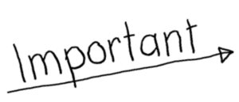

R2-PROG-01 : Rappels programmation 1M
Contents

R2-PROG-01 : Rappels programmation 1M#
Objectifs#
réviser les éléments importants du thème programmation de 1M pour bien aborder la programmation en 2M
créer, enregistrer, sauvegarder, envoyer un fichier source Python
connaître les principaux types de variables
être capable de faire test conditionnel
connaître les différents types de boucles
construire une structure de données avec une liste
construire des fonctions simples
L’IDE Thonny, les entrées et les sorties#
L’environnement de développement intégré (IDE) utilisé est Thonny
Exercice 1 (sortie)#
ouvrir thonny
créer un nouveau fichier code source Python
entree.pycréer un programme qui écrit
Hello World !(Hint : utiliser la fonctionprint())enregistrer le fichier sur son volume du réseau pédagogique
envoyer le fichier sur le Moodle
Exercice 2 (entrées)#
créez un nouveau fichier code source Python
sortie.pyécrivez un programme qui demande un prénom (hint : utilisez la fonction
input()) et l’affiche (hint : utilisez la fonctionprint())modifiez votre programme pour qu’il affiche
Bonjouret le prénom choisi par l’utilisateur
Variables et types#
Les variables sont utilisées pour stocker de l’information dans un code informatique. Elles sont décrites par :
leur nom
leur type
leur contenu (leur valeur)
leur adresse
Vous pouvez consulter le TP sur les notions de types de 1M
Exercice 3#
sous thonny, créer un nouveau fichier source Python
variables.pyécrire un programme qui déclare :
en entier (
int)une chaîne de caractères (
str)un booléen (
bool)
modifiez les valeurs assignées
entier = 10
chaine = "Bonjour le monde"
booleen = True
flottant = 3.14
print(entier, chaine, booleen, flottant)
10 Bonjour le monde True 3.14
Les tests conditionnels#
La structure conditionnelle s’écrit avec le mot-clef if :
if condition :
instruction1
la condition est toujours une comparaison entre deux valeurs (variables ou valeurs fixes) de même type avec les opérateurs conditionnels usuels (qui se lisent de gauche à droite):
Opérateur conditionnel |
Signification |
|---|---|
|
est égal à |
|
n’est pas égal à |
|
est strictement plus grand que |
|
est plus grand ou égal à |
|
est strictement plus petit que à |
|
est plus petit ou égal à |
Il est possible d’ajouter une condition opposée avec le mot-clef else :
if condition :
instruction1
else:
instruction2
en français : si la condition est remplie, alors le programme exécute l’instruction1, sinon il exécute l’instruction2
Vous pouvez consulter le TP sur les tests conditionnels de 1M
Exercice 4#
dans thonny, créez un nouveau fichier python nommé
conditions1.pyécrivez un programme qui :
demande un entier
xà l’utilisateurécrit si cet entier est plus petit ou égal à 5
testez votre programme avec différentes entrées
enregistrez votre programme
Exercice 5#
dans thonny, créez un nouveau fichier python nommé
conditions2.pyécrivez un programme qui :
demande le prénom de l’utilisateur et le stocke dans la variable
prenomdemande l’âge de l’utilisateur et le stocke dans la variable
agerépond à l’utilisateur une phrase du type :
Bonjour Caroline, votre âge est de 16 ans donc vous êtes mineureouBonjour Stéphane, votre âge est de 30 ans, donc vous êtes majeure(facultatif) vous pouvez encore demander le genre de l’utilisateur et accorder l’adjectif majeur à celui-ci
testez votre programme avec différentes entrées
enregistrez votre programme
Les boucles#
Une boucle permet de répéter plusieurs fois un bloc d’instructions. On utilise le mot-clef for, un itérateur qui est une variable (généralement i) et d’un périmètre appelé range():
Rappel : la signature de la fonction range() est range(borneInf, borneSup, pas) ou borneInf (facultatif) est la borne inférieure, borneSup est la borne supérieure, et pas (facultatif) est le pas à chacune des itérations. Dans l’exemple suivant :
for i in range(1,100,2):
instruction1
instruction2
le programme va itérer (répéter) les instructions instruction1 et instruction2 entre 1 et 100 avec un pas de 2. La variable i va donc prendre les valeurs successive : 1,3,5,7,...
Vous pouvez consulter le TP sur les boucles de 1M
Exercice 6 (boucles)#
dans thonny, créez un nouveau fichier python appelé
boucles1.pyécrivez un programme qui affiche tous les nombres multiples de 5 entre 1 et 100
enregistrez votre programme
Exercice 7 (boucles + conditions)#
dans thonny, créez un nouveau fichier python appelé
boucles2.pyécrivez un programme qui :
demande à l’utilisateur une borne supérieure appelée
borneSupaffiche tous les nombres impairs entre 1 et cette borne supérieure
testez votre programme avec différentes entrées
enregistrez votre programme
Exercice 8 (boucles + double conditions)#
dans thonny, créez un nouveau fichier python appelé
boucles3.pyécrivez un programme qui :
demande à l’utilisateur s’il souhaite afficher les nombres pairs ou les nombres impairs (variable
pairde typebool)demande à l’utilisateur entre quelles bornes il les souhaite (variables
borneInfetborneSup)affiche les nombres demandés
testez votre programme avec différentes entrées qui vérifient toutes les possibilités conditionnelles
enregistrez votre programme
Exercice 9 (boucle while)#
Développer un jeu de devinettes
dans thonny, créez un nouveau fichier python appelé
boucles4.pyécrivez un programme qui :
choisir un nombre à deviner
nombreentrebinfetbsupinitialiser la tentative du joueur
tentativedemander au joueur un nombre
tentativecompris entrebinfetbsupLe programme précise si la
tentativeproposée est plus grande ou plus petite que le nombre à deviersortir de la boucle lorsque le joueur a trouvé le
nombre
Facultatif : implémentez une sortie de la boucle si le joueur écrit -1 comme entrée de la tentative
Les listes#
Les listes sont des structures de données en Python qui permettent de stocker plusieurs variables de même type ou de types différents. Chaque élément d’une liste est accessible par son index : sa position dans le tableau de la première variable à la dernière en commençant par 0.
Plusieurs fonctions permettent de manipuler la liste. On peut :
connaître la taille d’une liste avec la fonction
len()créer une liste vide nommée
malisteen la définissant parmaliste = []ajouter un élément à la dernière position avec la fonction
maliste.append(élément)ajouter un élément à l’index
iavec la fonctionmaliste.insert(i,élément)modifier un élément d’une liste à l’index
i:maliste[i] = 4supprimer le dernier élément avec la fonction
maliste.pop()supprimer l’élément
x(s’il existe avec la fonctionmaliste.remove(x)vider la liste avec la fonction
maliste.clear()
Vous pouvez consulter le TP sur les tableaux de 1M
Exercice 10 (listes)#
dans thonny, créez un nouveau fichier python nommé
listes1.pyécrivez un programme qui :
définit une liste vide nommée
elevedemande à l’utilisateur son prénom (variable
prenom) et l’ajoute à la position0dans la listeelevedemande à l’utilisateur son nom (variable
nom) et l’ajoute à la position1dans la listeelevedemande à l’utilisateur le nom de sa classe (variable
classe) et l’ajoute à la position2dans la listeelevedemande à l’utilisateur son âge (variable
age) et l’ajoute à la position3dans la listeeleveaffiche tous les éléments de la liste
testez votre programme avec différentes entrées
enregistrez votre programme
Exercice 11 (listes + boucles)#
dans thonny, créez un nouveau fichier python nommé
listes2.pycopiez-collez toutes les instructions de votre programme
listes1.pymodifiez le programme pour qu’il :
définisse une nouvelle liste vide nommée
gymnasedemande à l’utilisateur combien il veut enregisrter d’élèves (variable
nbr)utilise une boucle (instruction
for i in range(nbr)pour répèter toutes les instructions du programmelistes1.pysauf la définition de la liste vide et l’affichage des éléments de la listeaffiche tous les éléments de la liste
gymnase(aussi avec une boucle)
testez votre programme avec des valeurs pas trop élevées de la variable
nbrenregistrez votre programme
Exercice 12 (listes + boucles + conditions) : facultatif#
dans thonny, créez un nouveau fichier python nommé
listes3.pycopiez-collez toutes les instructions de votre programme
listes2.pymodifiez le programme pour qu’il :
n’affiche que les élèves de la liste
gymnasequi :sont mineurs
s’appellent
Carolinesont dans la classe
1C1
testez votre programme (notamment en ajoutant des élèves qui remplissent certaines des conditions)
enregistrez votre programme
Les fonctions#
Les fonctions permettent de simplifier la lecture d’un programme en regroupant les instructions et opérations répétées. On définit une fonction avec le mot-clef def suivi du nom de la fonction avec ses éventuels arguments (facultatifs):
def maFonction(age):
print('mon âge est de '+str(age)+ ' ans')
est une fonction qui s’appelle au sein du programme par :
maFonction(15)
et va afficher :
mon âge est de 15 ans
Vous pouvez consulter le TP sur les fonctions de 1M
Exercice 13 (fonctions)#
dans thonny, créez un nouveau fichier nommé
fonctions1.pyécrivez un programme qui :
comporte une fonction nommée
temp()avec 1 argument (variabletemp)demande à l’utilisateur la température extérieure (variable
temperature)affiche la température extérieure sous la forme
Aujourd'hui, il fait temperature °C
testez votre programme avec différentes valeurs
enregisrez votre programme
Exercice 14 (fonctions + conditions)#
dans thonny, créez un nouveau fichier nommé
fonctions2.pycopiez-collez toutes les instructions de votre programme
fonctions1.pymodifiez votre programme en ajoutant une nouvelle fonction nommée
canicule()avec 1 argumenttemp:demande à l’utilisateur la température extérieure (variable
temperature)affiche un message sous la forme
Aujourd'hui est une journée caniculairesi la température est supérieure à30degrés. Affiche la température telle quelle si au-dessous.
testez votre programme avec différentes valeurs
enregistrez votre programme